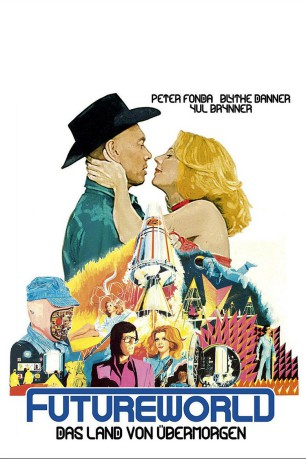

gesehen am 06.05.2015
gesehen am 06.05.2015Alternativ: Futureworld gesehen am 06.05.2015
 
 IMDB-Wertung: 5.8 / 10
IMDB-Wertung: 5.8 / 10  Metascore:
Metascore: 
Zwei Jahre nach einer Katastrophe im Freizeitpark „Delos“, bei der Gäste und Mitarbeiter durch außer Kontrolle geratene Androiden getötet wurden, ist die Einrichtung wieder eröffnet. Man hat sehr viel Geld investiert, um die Ursache der Katastrophe zu ermitteln und alle Androiden und technischen Einrichtungen zu erneuern, um künftig solche Katastrophen auszuschließen.
Jahr: 1976
Dauer: 108 Minuten
FSK: 12
Land: USA Studio: AIPTonspuren:
Untertitel:
Auflösung: 1080p (1920x1040) Größe: 8140 MB
Regisseur: Richard T. Heffron
Drehbuch: Mayo Simon, George Schenck
Soundtrack: Fred Karlin
Darsteller:
 Peter Fonda als Chuck Browning
Peter Fonda als Chuck Browning Blythe Danner als Tracy Ballard
Blythe Danner als Tracy Ballard Yul Brynner als The Gunslinger
Yul Brynner als The Gunslinger John P. Ryan als Dr. Schneider
John P. Ryan als Dr. Schneider Stuart Margolin als Harry
Stuart Margolin als Harry Darrell Larson als Eric
Darrell Larson als Eric John Fujioka als Mr. Takaguchi
John Fujioka als Mr. Takaguchi Dana Lee als Mr. Takaguchi's Aide
Dana Lee als Mr. Takaguchi's Aide Andrew Masset als Male Robot
Andrew Masset als Male Robot James M. Connor als Robot Clark
James M. Connor als Robot Clark Jim Antonio als Ron Thurlow
Jim Antonio als Ron Thurlow Conrad Bachmann als (uncredited
Conrad Bachmann als (uncredited Nick Dimitri als Robot Boxer , uncredited
Nick Dimitri als Robot Boxer , uncredited Arthur Hill als Duffy
Arthur Hill als Duffy Leoda Richards als Audience Member , uncredited
Leoda Richards als Audience Member , uncreditedDatei: X:\2-Dilogie(N-Z)\Westworld-Futureworld\Futureworld - Das Land von Übermorgen (1976, FSK12, 1920x1040).mkv seit 04.05.2015
Festplatte: HD Collection-2(A-Z)-3(A-M)
 Alle Filme aus Gruppe '2-Dilogie(N-Z)\Westworld-Futureworld'
Alle Filme aus Gruppe '2-Dilogie(N-Z)\Westworld-Futureworld'